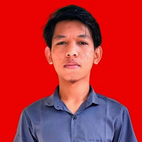

Saya memiliki pendekatan kerja yang logis dan praktis, dengan ketertarikan kuat pada bidang teknis serta perbaikan proses kerja. Terbiasa menganalisis permasalahan, memanfaatkan berbagai tools, dan mencari solusi yang efisien di lapangan. Saya cenderung tidak nyaman dengan proses yang berjalan tanpa evaluasi, sehingga selalu berupaya meningkatkan efisiensi dan kerapian sistem kerja.
Latar belakang pendidikan Akuntansi (SMK, 2020 – Kota Bogor) membekali saya dengan pemahaman dasar mengenai pencatatan, pengukuran, pengklasifikasian, serta pelaporan keuangan. Kompetensi tersebut saya aplikasikan dalam kegiatan operasional, khususnya melalui Microsoft Excel untuk pengolahan data dan pembuatan otomasi sederhana guna meningkatkan efektivitas pekerjaan.
Di luar administrasi, saya memiliki minat besar pada bidang otomotif, khususnya kendaraan roda dua. Ketertarikan ini mendorong saya untuk terus memperdalam kemampuan teknis, mulai dari pembongkaran, analisis kerusakan, hingga perakitan mesin. Saya terbiasa melakukan identifikasi masalah secara sistematis sebelum menentukan tindakan perbaikan agar hasil lebih tepat dan optimal.
Seiring perkembangan teknologi, saya terus mengembangkan diri melalui pembelajaran mandiri terkait sistem kerja, tools digital, dan otomasi. Dalam lingkungan profesional, saya berperan sebagai seorang intrapreneur — tidak hanya menyelesaikan tugas, tetapi juga aktif mengidentifikasi peluang perbaikan yang dapat memberikan dampak nyata terhadap produktivitas dan kinerja tim maupun perusahaan.